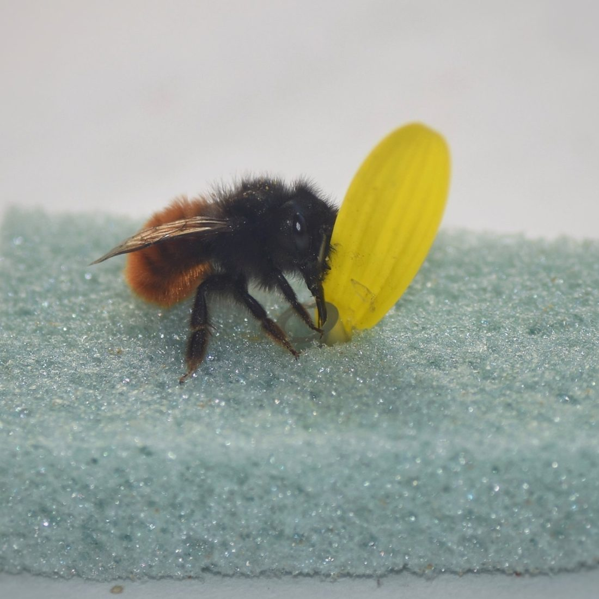
© Sergio AlbaceteThe petal method
The feeding solution is offered with a flower petal, which bees readily recognise as a food source. Each bee ingests a known dose.
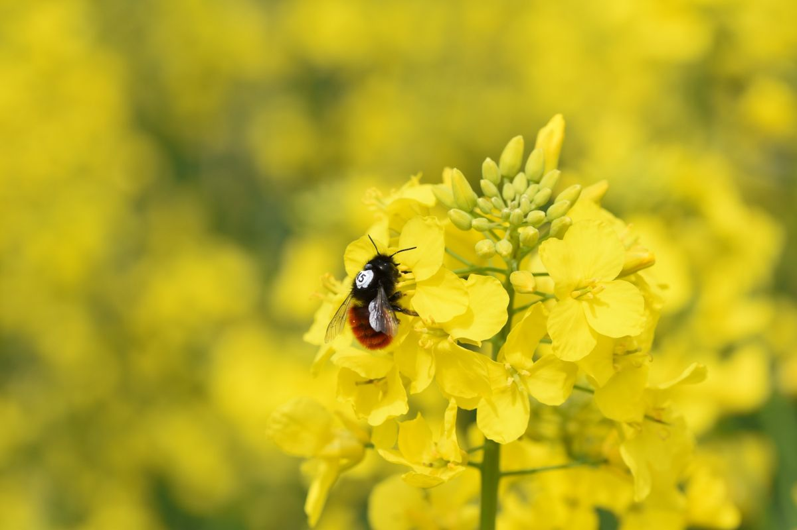
© Sergio AlbaceteEcotoxicologist at the University of Bologna. I study the sublethal effects of pesticides on wild bees, alone and combined with other stressors such as climate warming, and develop methods to assess them.
Pesticide risk assessment uses the honey bee as a surrogate for all bees. However, solitary bees, bumblebees and other wild pollinators differ from honey bees in life history, sensitivity and routes of exposure, so honey bee-based assessments may not protect them. I did my PhD at CREAF on the sublethal effects of pesticides on the solitary bee Osmia cornuta, and I am now a postdoc at the University of Bologna working on wild pollinator risk assessment.
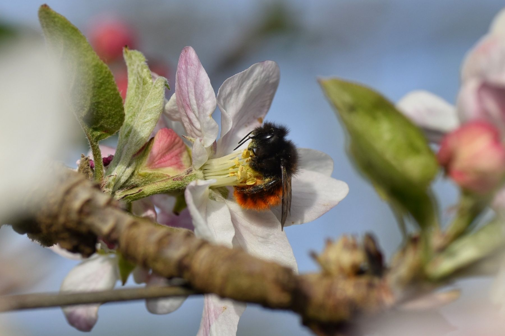
© Sergio AlbaceteI combine laboratory, semi-field and field studies to link sublethal effects on individual bees with their consequences for reproductive success and population growth.
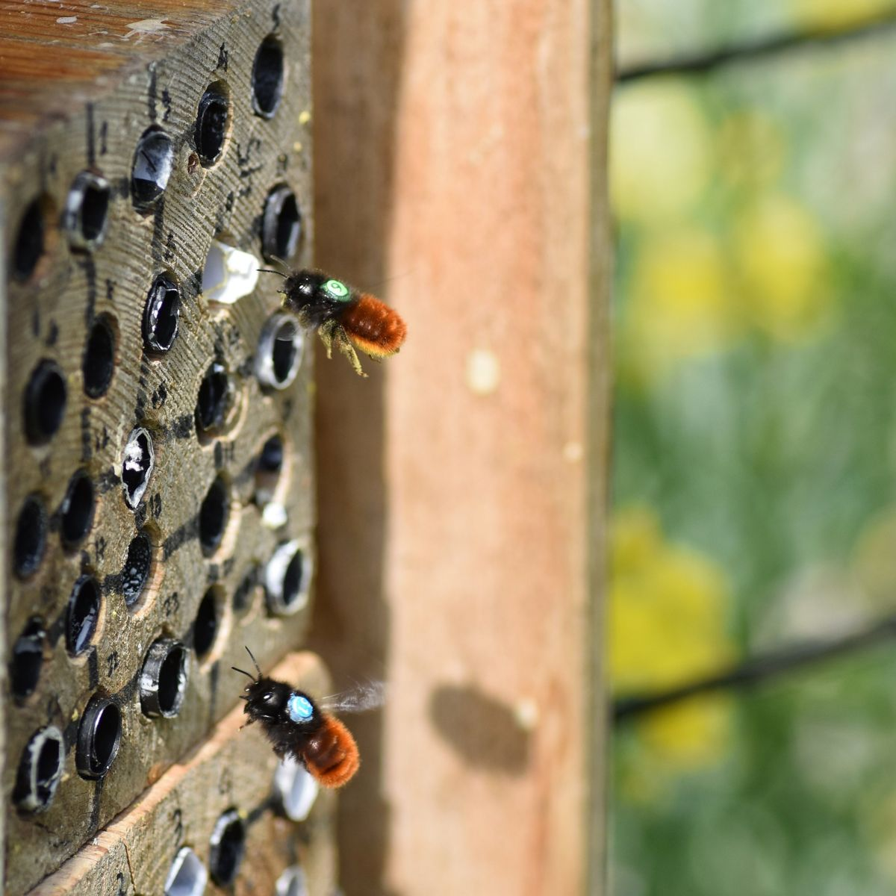
© Sergio AlbaceteIn oilseed rape field cages, I follow individually marked Osmia cornuta females throughout the nesting period. Field-realistic levels of an insecticide–fungicide mixture, but not of either compound alone, impaired nest recognition, shortened the nesting period and reduced fecundity. Population growth rates fell from 1.3–1.7 to 0.5–0.6, turning growth into decline.
Environment International 2024 · Environmental Pollution 2024
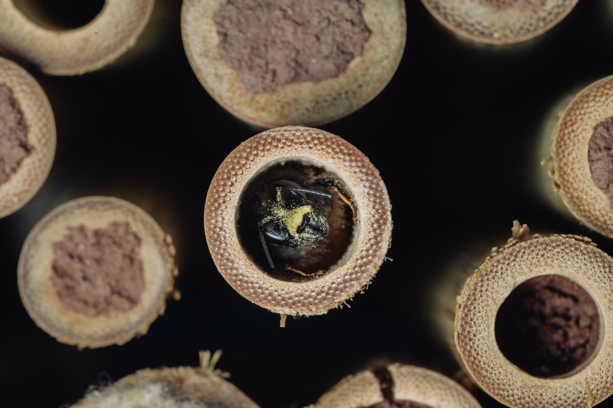
© Galdric Mossoll / CREAFOsmia overwinter as adults inside their cocoons, without access to food until spring. Warm wintering temperatures deplete the fat body, the main tissue involved in pesticide detoxification. Females wintered under projected 2051–2080 temperatures and then exposed to a sublethal insecticide dose showed a 70% decrease in longevity. With Fabrice Requier (Paris-Saclay) I have scaled these effects up to the population level with agent-based models (under revision in Environmental Science & Technology).
Global Change Biology 2023 · featured in Nature Climate Change
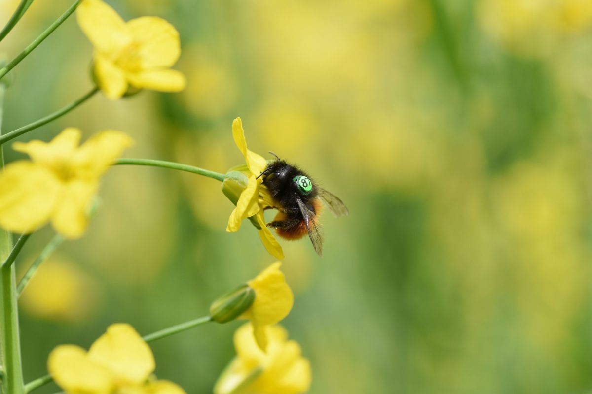
© Sergio AlbaceteAt Bologna I generate trait-based toxicity data for different pollinator groups, so that risk assessment can account for differences in sensitivity among species. I also estimate pollen and nectar consumption in bumblebees and solitary bees, needed to translate residue levels into actual oral exposure. Along the same line, I have traced how fungicide residues move from the spray tank to flowers, pollen, nectar and larval provisions.
PollinERA · PollinEat (EFSA) · Environmental Pollution 2026
They do not recognise artificial feeders. Osmia spp. do not readily feed from the artificial feeders used in honey bee tests, so ingestion of the dose is not guaranteed.
They do not share food. Honey bee workers exchange food by trophallaxis, so in group tests the dose is spread among individuals. Solitary bees do not, so each bee has to be dosed individually.
Few tools for sublethal effects. Standard tests focus on mortality, and the few laboratory methods available to assess sublethal effects were designed for Apis mellifera.
These are the methods I have helped develop to address these gaps.

© Sergio AlbaceteThe feeding solution is offered with a flower petal, which bees readily recognise as a food source. Each bee ingests a known dose.
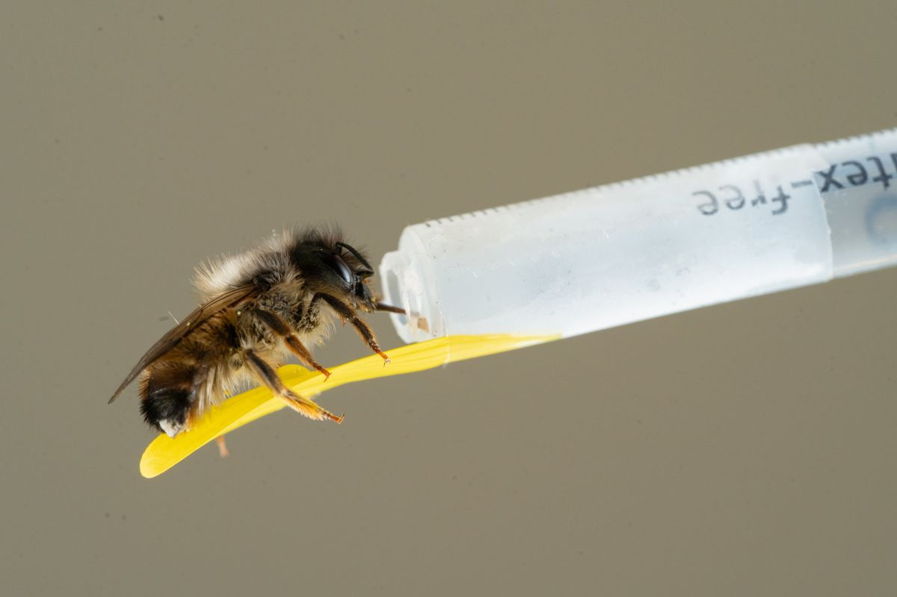
© Galdric Mossoll / CREAFA protocol to expose adult solitary bees over several days, closer to field conditions than a single acute dose. Ring-tested in more than 20 laboratories.
Submitted to the OECD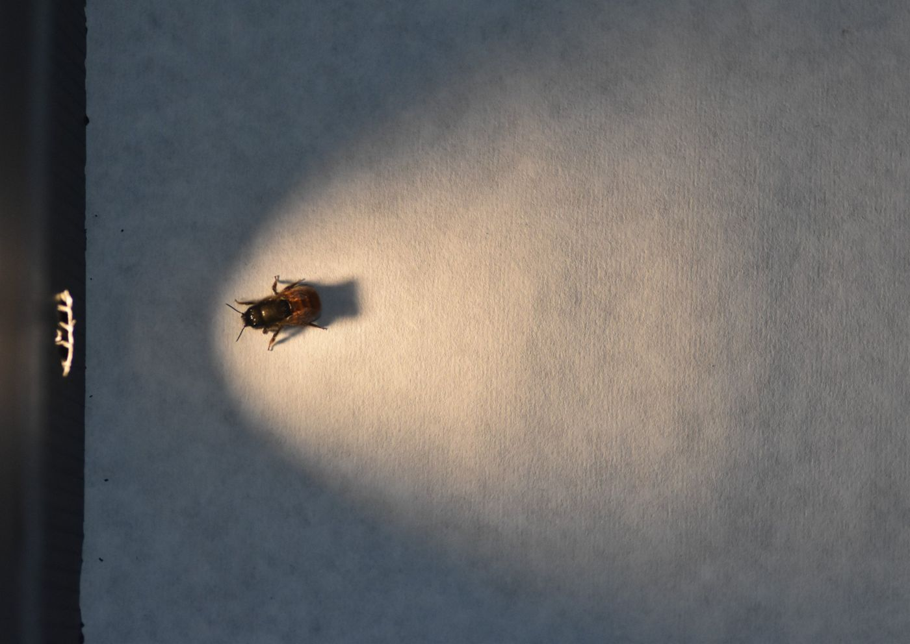
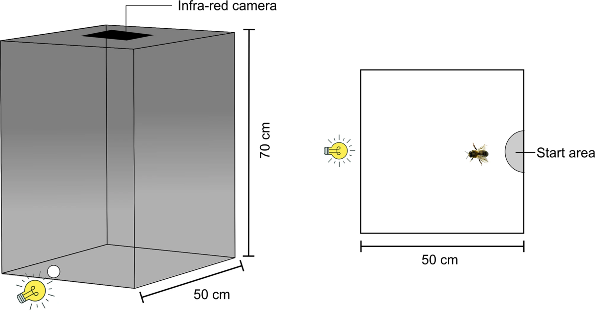
© Sergio Albacete Sancho et al. 2025, Sci. Rep. · CC BY 4.0A bee is released in a dark 50 × 50 cm arena, opposite a light, and filmed from above with an infrared camera. Unexposed bees walk towards the light. The main endpoint is whether the bee reaches it within a set time, usually one minute. Walking speed and trajectory can also be recorded.
Validated in Osmia spp., Apis mellifera, Megachile rotundata and other species.
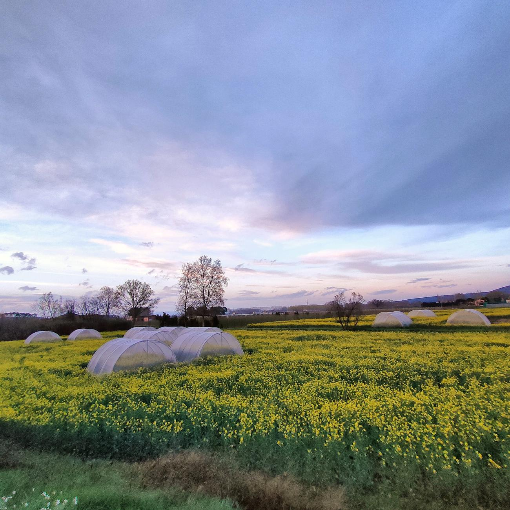
© Sergio Albacete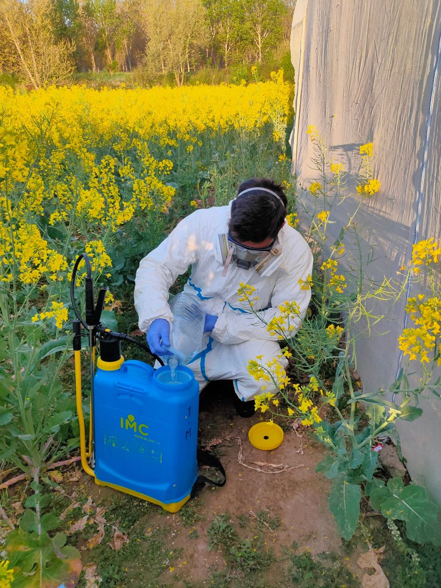
© Sergio Albacete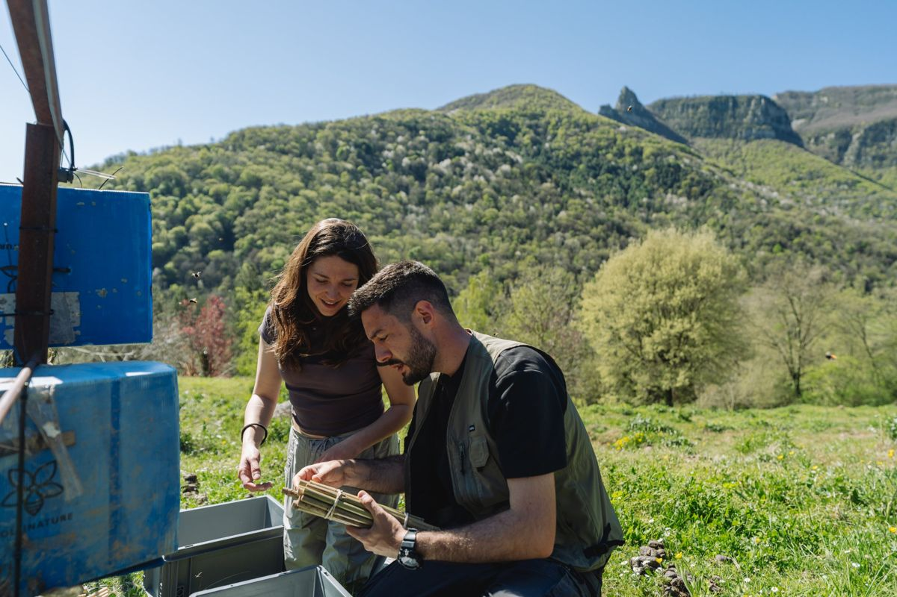
© Galdric Mossoll / CREAFAn Osmia female builds her nest as a linear series of cells, each with a pollen-nectar provision and an egg, separated by mud partitions. The oldest cell is at the back, the newest by the entrance. Here is mine.
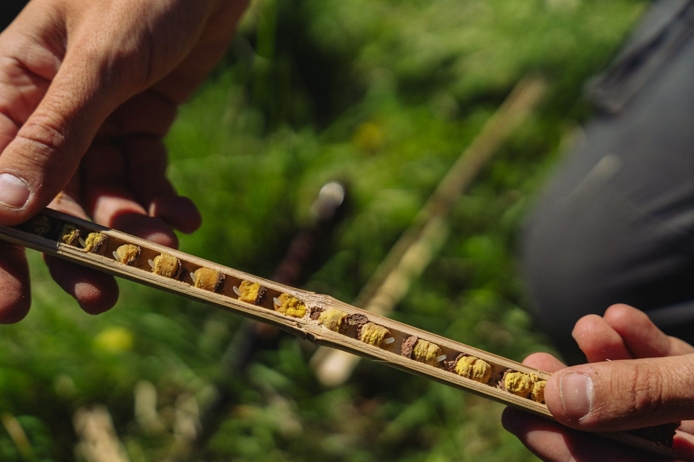
© Galdric Mossoll / CREAFThe full list is on Google Scholar.
From the spray tank to the bee nest: translocation and persistence of fungicide residues in Osmia cornuta food provisions
Albacete S, Azpiazu C, Sancho G, García-Gómez A, Sgolastra F, Rodrigo A, Bosch J
doi:10.1016/j.envpol.2026.129357Bees exposed to climate change are more sensitive to pesticides
Albacete S, Sancho G, Azpiazu C, Rodrigo A, Molowny-Horas R, Sgolastra F, Bosch J
Research Highlight in Nature Climate Change: “Warming worsens insecticide impacts” doi:10.1111/gcb.16928Sublethal insecticide-fungicide mixtures affect reproductive success and population growth in Osmia cornuta
Albacete S, Sancho G, Azpiazu C, Rodrigo A, Sgolastra F, Bosch J
doi:10.1016/j.envint.2024.108919Sublethal fungicide-insecticide co-exposure affects nest recognition and parental investment in a solitary bee
Albacete S, Azpiazu C, Sancho G, Barnadas M, Alins G, Sgolastra F, Rodrigo A, Bosch J
doi:10.1016/j.envpol.2024.125223A phototaxis assay to measure sublethal effects of pesticides on bees
Sancho G, Albacete S, Azpiazu C, Sgolastra F, Rodrigo A, Bosch J
doi:10.1038/s41598-025-05400-7Co-exposure to a honeybee pathogen and an insecticide: synergistic effects in a new solitary bee host but not in Apis mellifera
Tadei R, Cilia G, Mathias da Silva EC, Sancho G, Albacete S, … Sgolastra F
doi:10.1098/rspb.2024.2809Rare plants sustain communities of visitors with similar diversity but different composition across populations of different size
Miranda-Cebrián H, Cáliz J, Olesen JM, González Megías A, Albacete S, … García MB
doi:10.1016/j.ppees.2026.125930Chronic oral toxicity protocol for adult solitary bees (Osmia bicornis)
Azpiazu C, Sgolastra F, Ippolito A, Albacete S, … Bosch J
doi:10.1016/j.envpol.2024.125129An improved method to feed solitary bees (Osmia spp.) known amounts of pesticides
Azpiazu C, Hinarejos S, Sancho G, Albacete S, … Bosch J
doi:10.1016/j.ecoenv.2023.115398MetaBeeAI: an AI pipeline for structured evidence extraction from biological literature
Parkinson RH, Cerbone H, Mieskolainen M, Cao S, Wilson AD, Albacete S, … Roberts S
doi:10.1016/j.ecoinf.2026.103813Use of a novel nesting material by the spider wasp Dipogon variegatus
Albacete S, Sancho G, Bosch J
doi:10.3897/jhr.97.123853Trait-based specific protection goals for wild pollinators: a staged modelling framework for pesticide risk assessment
Topping C, Focks A, Albacete S, Azpiazu C, …
Under revision, Environmental Sciences Europe doi:10.21203/rs.3.rs-10019161/v1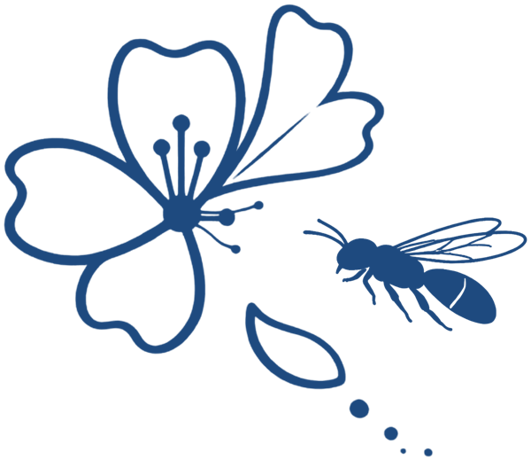
Insecticide applications are restricted during crop bloom but authorised at petal fall, once fruit trees have finished flowering. Beekeepers remove their hives, but wild pollinators remain, and wildflowers in and around the orchard are still in bloom. Beyond bloom asks how these applications affect them.
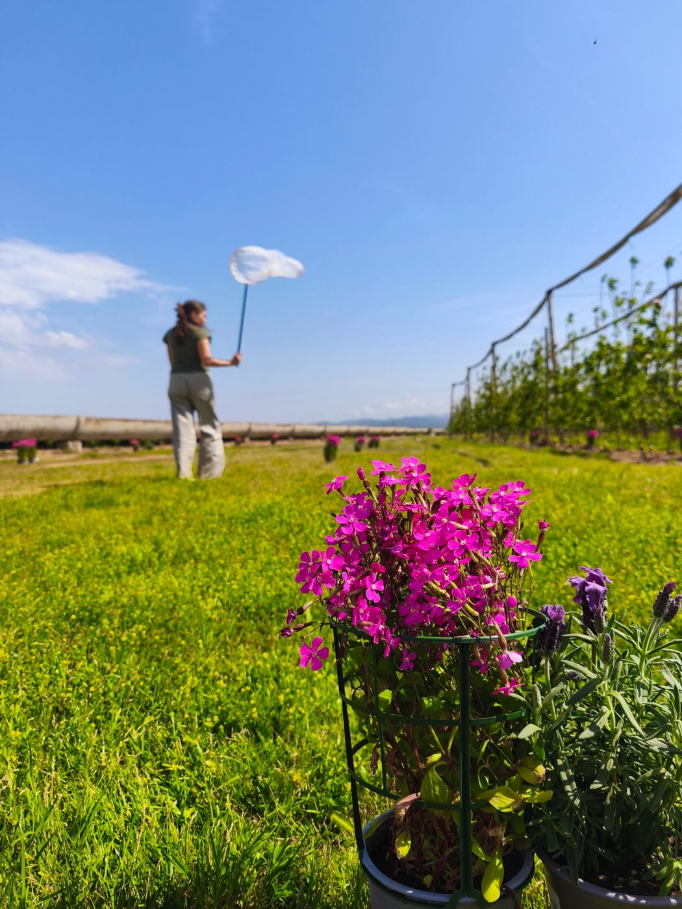
© Sergio AlbaceteMoving EU pesticide risk assessment from single substances tested on honey bees to a systems-based assessment of insect pollinators. Partners include Aarhus and Lund Universities.
Horizon Europe, grant 101135005 · 2024–27 · Project pageEstimating pollen and nectar consumption by adults and larvae of bumblebees and solitary bees, to improve oral exposure estimates in risk assessment. With CREAF and Biobest.
EFSA, OC/EFSA/PREV/2023/03 · 2025–26 · Project pageSolitary bees under climate change: effects of warming, alone and combined with nutritional stress and pesticide exposure, on phenology, reproductive success and population dynamics. Led by Jordi Bosch and Anselm Rodrigo at CREAF.
Spanish Ministry of Science, Innovation and Universities · 2026–29 · Project pageIn progress
Completed
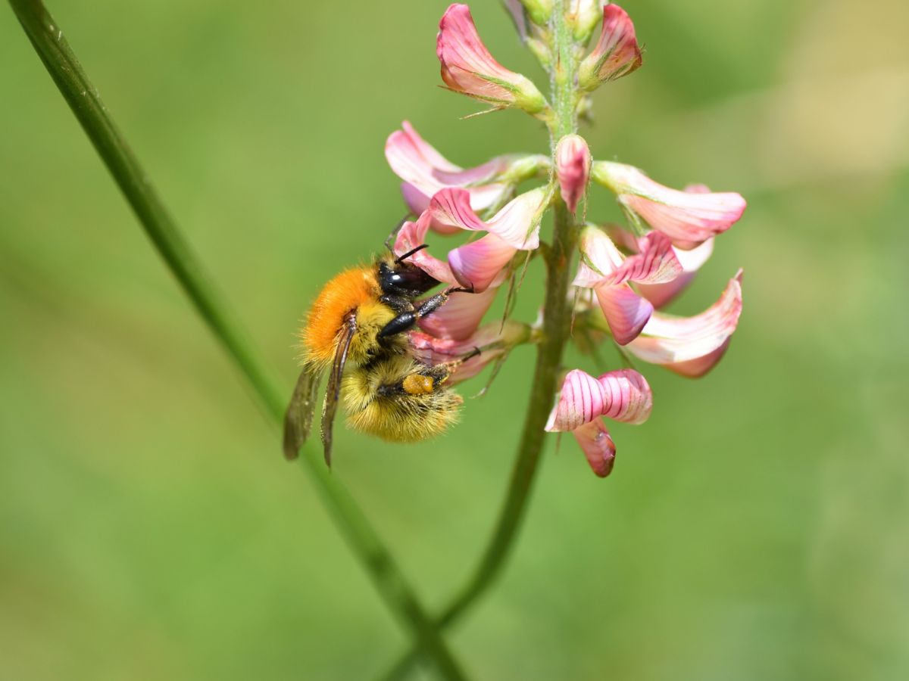
© Sergio Albacete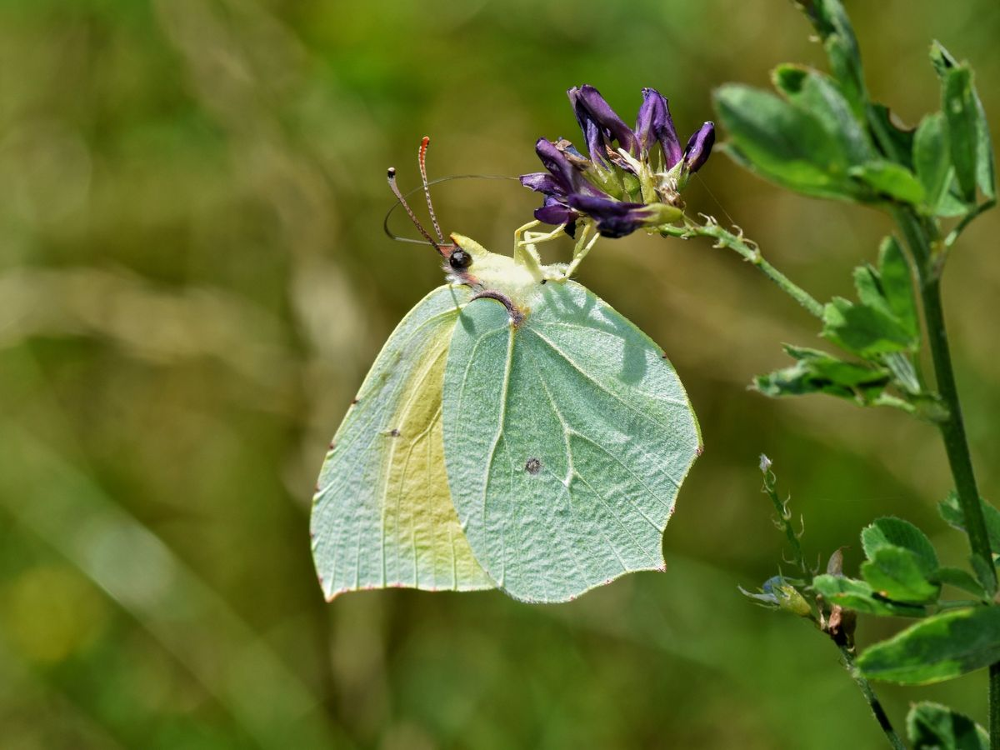
© Sergio Albacete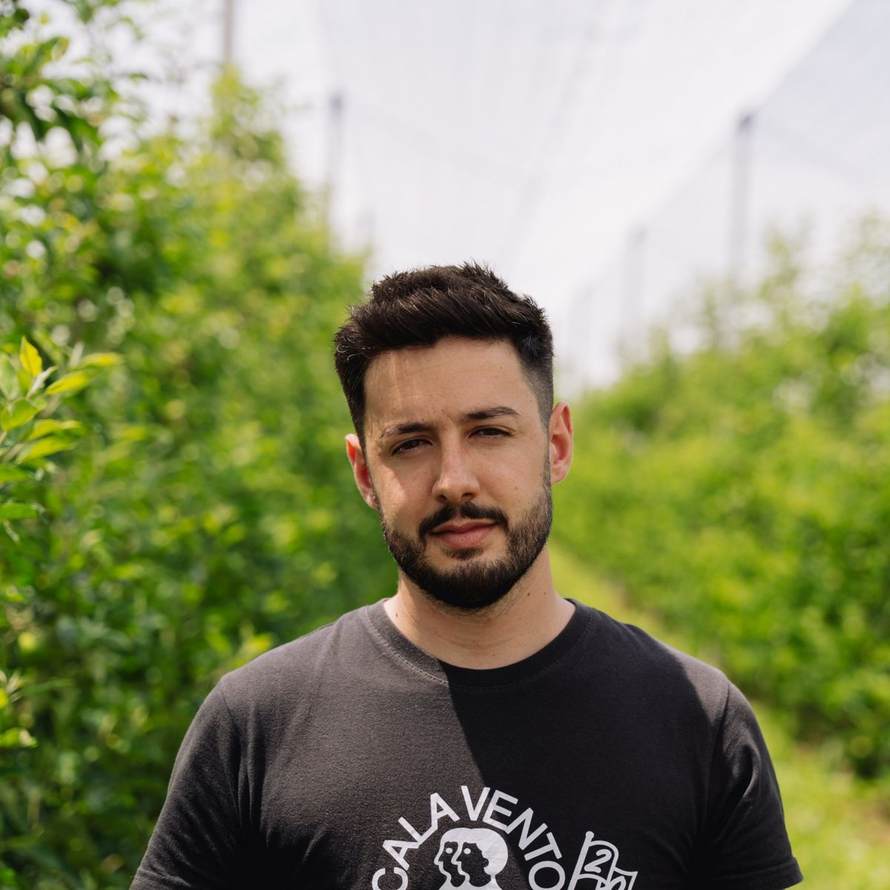
© Galdric Mossoll / CREAFsergio.albacete@unibo.it
Department of Agricultural and Food Sciences (DISTAL), University of Bologna, Italy